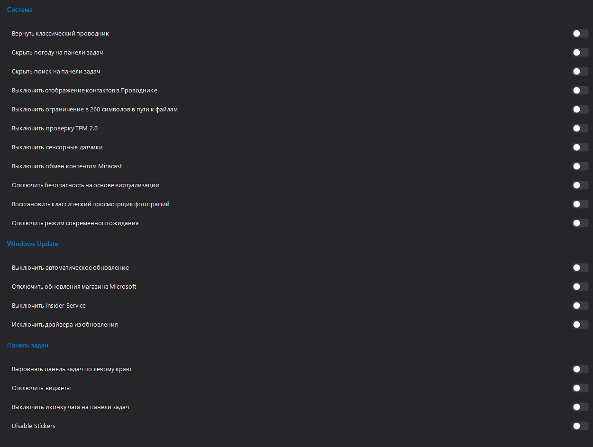
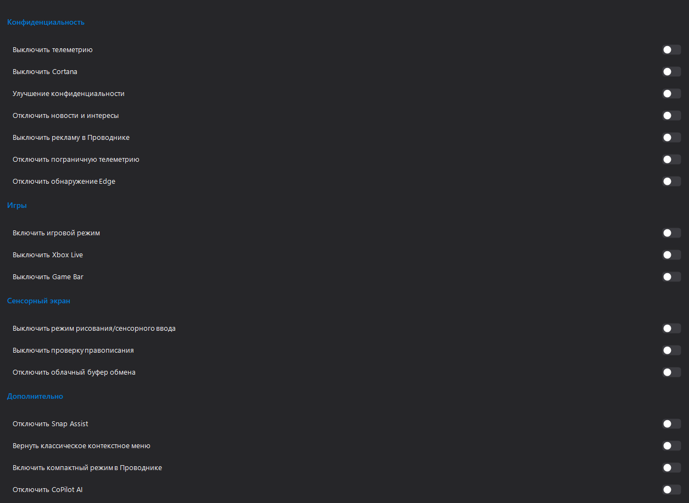
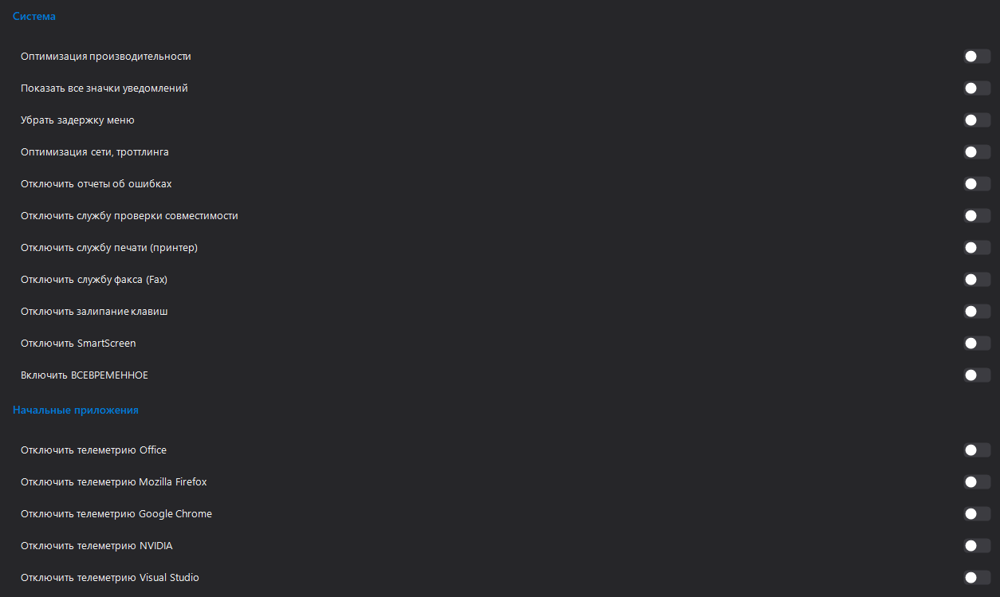
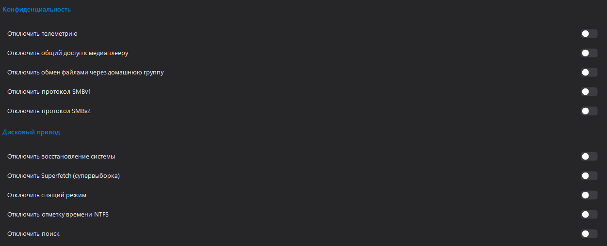
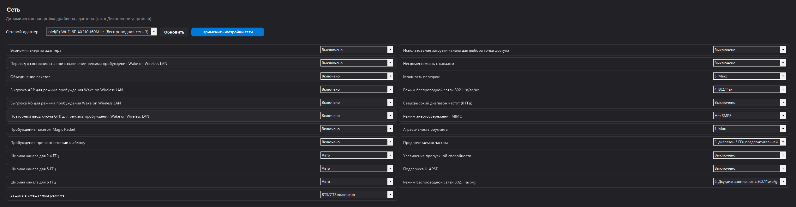
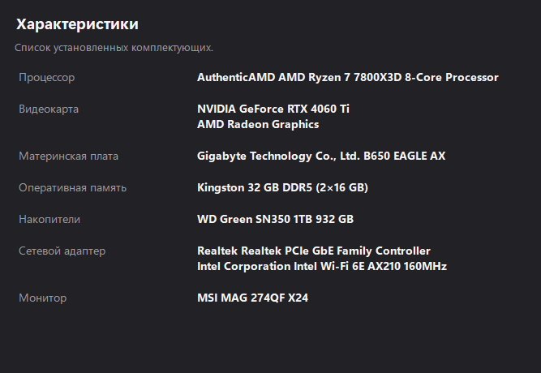

WinTune —
Ультимативная оптимизация
Windows 11
Верните контроль над своей системой: отключите телеметрию, ускорьте игры и настройте интерфейс в один клик. Никакого мусора, только чистый C# и безопасность.
Интуитивный интерфейс
Все настройки разложены по полочкам. Просто, понятно и безопасно.

Открыть скриншот

Открыть скриншот

Открыть скриншот

Открыть скриншот

Открыть скриншот

Открыть скриншот
Почему выбирают WinTune?
Максимум скорости и контроля над Windows 11 без риска для системы.
Приватность под замком
Блокируем телеметрию Windows, Edge и стороннего софта. Никакой скрытой слежки и фоновой отправки данных.
Игровой буст и низкий пинг
Активируем Game Mode, отключаем лишние службы и тонко настраиваем Wi-Fi/сетевой адаптер для стабильного коннекта.
Удобный интерфейс
Возвращаем классическое контекстное меню, привычный проводник и убираем визуальный шум одним кликом.
Чистая система без хлама
Безопасно отключаем ненужные компоненты (Xbox Live, печать, факс) и показываем полную сводку о вашем железе.